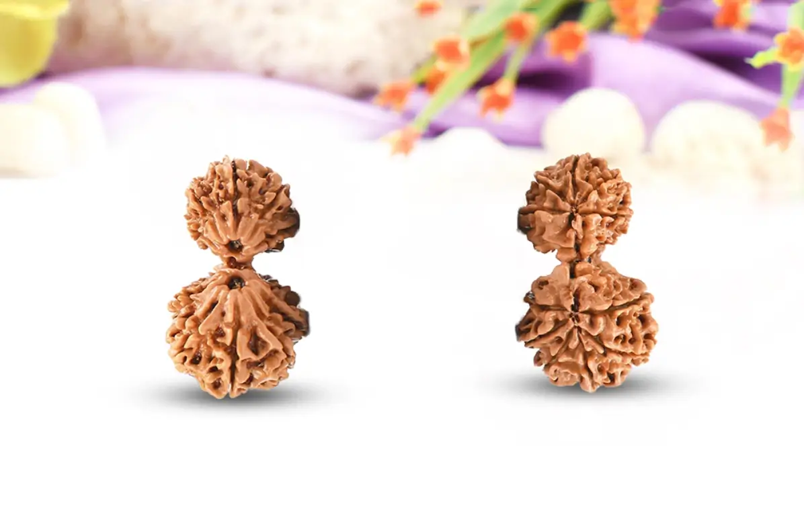
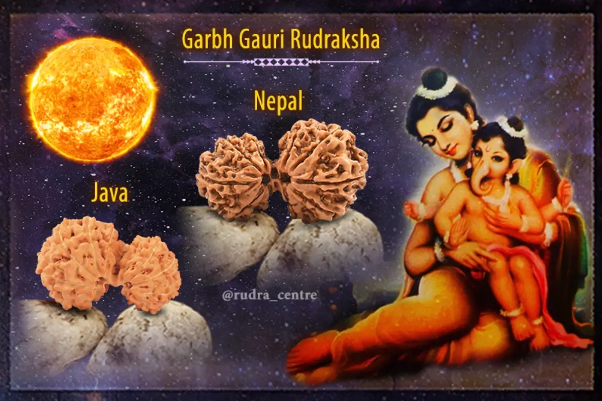

Garbh Rudraksha - Hạt Kim Cang 25 Khía

Hạt Rudraksha 25 Mukhi (Garbh Gauri Rudraksha) hay còn gọi là hạt Kim Cang 25 Khía, tên gọi "Hạt Kim Cang" xuất phát từ độ cứng và bền bỉ của hạt, tượng trưng cho sức mạnh và sự kiên định.
"Hạt Rudraksha" tên gọi này bắt nguồn từ tiếng Phạn, "Rudra" là tên của thần Shiva, "aksha" nghĩa là "mắt". Do đó, hạt Rudraksha được xem là "mắt của thần Shiva", tượng trưng cho sự bảo vệ và ban phước lành.
Hạt Kim Cang 25 Khía là một loại hạt rất hiếm, chỉ chiếm khoảng 0.01% trong số tất cả các hạt Rudraksha. Do đó, giá trị của loại hạt này cũng cao hơn so với các loại hạt khác.
Trên thực tế, việc sở hữu một hạt Rudraksha 25 Mukhi không chỉ mang lại sự may mắn và bảo vệ mà còn giúp cải thiện tinh thần và sức khỏe của người sử dụng.
Ý nghĩa của hạt Rudraksha 25 Mukhi

Có vẻ ngoài là sự kết hợp giữa 2 hạt Rudraksha một cách tự nhiên, Gauri Ganesh Rudraksha là một trong những hạt huyền bí nhất được nhắc đến trong sách Thánh cổ và rất được tôn kính vì nó mang lại niềm vui bên nhau và cũng ban phước cho những cặp vợ chồng muốn có một đứa con khỏe mạnh. Hạt Rudraksha này rất hiếm được tìm thấy và mang lại sự thịnh vượng, giàu có, đồng thời mang lại quyền lực và sự thận trọng cho người đeo.
Hạt Gauri Ganesh Rudraksha loại bỏ những trở ngại khỏi cuộc sống của người đeo vì Chúa Ganesh gắn liền với hạt này và Ngài rất được tôn kính và được biết đến với cái tên “Vighnaharta”, Vị thần loại bỏ mọi trở ngại khỏi cuộc sống của những người sùng đạo Ngài. Rudraksha này cũng đề cao lòng tự trọng và tăng cường sự tự tin đồng thời khiến người đeo không sợ hãi.
Theo truyền thống Hindu, hạt Rudraksha 25 Mukhi được coi là biểu tượng của sự bảo vệ và phúc lợi. Hạt này được cho là có khả năng bảo vệ người sử dụng khỏi những nguy cơ và nguy hiểm từ bên ngoài, đồng thời mang lại sự an lành và hạnh phúc cho gia đình. Ngoài ra, hạt Rudraksha 25 Mukhi cũng được xem là biểu tượng của sự trí tuệ và sáng suốt, giúp người sử dụng tăng cường khả năng tư duy và quyết định.
Lợi ích của hạt Rudraksha 25 Mukhi
Hạt Rudraksha 25 Mukhi là một hạt linh thiêng mạnh mẽ với nhiều lợi ích về thể chất, tinh thần. Bằng cách đeo hạt này, người ta có thể tận dụng sức mạnh của nó để cải thiện sức khỏe, tăng cường sức mạnh tinh thần, phát triển tâm linh và bảo vệ khỏi năng lượng tiêu cực.
Gia đình và Mối quan hệ
Tăng cường mối quan hệ vợ chồng: Gauri Ganesh Rudraksha được cho là mang năng lượng của cả Ganesha, vị thần bảo trợ cho hôn nhân, và Parvati, nữ thần tượng trưng cho tình mẫu tử và sự gắn kết. Việc đeo Rudraksha này có thể giúp cải thiện sự hòa hợp, thấu hiểu và tình yêu thương giữa vợ chồng.
Tăng cường tình cảm mẹ con: Rudraksha này giúp khơi dậy bản năng làm mẹ và nuôi dưỡng tình cảm gắn bó giữa mẹ và con.
Vận may và Tài lộc
Mang lại sự giàu có và thịnh vượng: Hạt này thu hút năng lượng tích cực, giúp gia tăng tài lộc, may mắn và thành công trong mọi lĩnh vực của cuộc sống.
Cải thiện vận may: Việc đeo Rudraksha này có thể giúp loại bỏ những chướng ngại vật và mang đến những cơ hội mới cho người đeo.
Sức khỏe và tinh thần
Cải thiện sức khỏe: Hạt Rudraksha 25 Mukhi được cho là có khả năng tăng cường hệ miễn dịch, giảm căng thẳng và lo âu, giúp người đeo có một sức khỏe tinh thần và thể chất tốt hơn.
Tăng cường năng lượng: Việc đeo Rudraksha này có thể giúp người đeo kết nối với năng lượng cao hơn mang đến sự tập trung.
Cách đeo hạt Rudraksha 25 Mukhi
Hạt Rudraksha 25 Mukhi có thể được đeo theo nhiều cách khác nhau, tùy thuộc vào mục đích và sở thích cá nhân:
Vòng cổ
Hạt có thể được xâu thành vòng cổ và đeo quanh cổ. Đây là cách đeo phổ biến nhất, vì nó giúp hạt gần với luân xa tim, giúp tăng cường sức khỏe thể chất và tinh thần.
Vòng tay
Hạt cũng có thể được xâu thành vòng tay và đeo trên cổ tay. Cách đeo này giúp hạt gần với luân xa gốc, giúp tăng cường sự ổn định và an toàn.
Trâm cài
Hạt Rudraksha 25 Mukhi có thể được gắn vào trâm cài và đeo trên quần áo. Cách đeo này giúp hạt gần với luân xa đỉnh, giúp tăng cường sự kết nối tâm linh.
Giá cả của hạt Rudraksha 25 Mukhi
Giá cả của hạt Rudraksha 25 Mukhi có thể thay đổi tùy thuộc vào kích thước, chất lượng và nguồn gốc. Tuy nhiên, nhìn chung, hạt có chất lượng tốt có thể có giá từ vài trăm đến vài nghìn đô la.